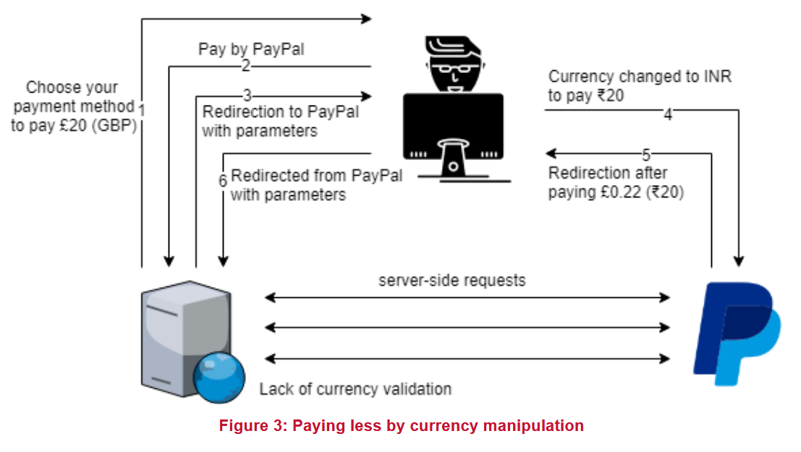

Хотя интернет-магазин может не принимать разные валюты, платежные приложения обычно принимают их и требуют указания параметра валюты в первоначальном запросе. Если веб-сайт не проверяет параметр валюты при завершении транзакции, пользователь может обмануть систему, внося деньги в валюте с гораздо меньшей стоимостью, чем запрашиваемая валюта.
Следующий пример демонстрирует плохо реализованный метод оплаты через PayPal, который можно эксплуатировать:
Пользователь совершает платеж в размере £20 на веб-сайт, используя опцию оплаты PayPal. Запрос, который веб-сайт отправил на сайт PayPal, был перехвачен, и параметр валюты изменен с "GBP" (британский фунт) на "INR" (индийская рупия). После завершения транзакции на сайте PayPal с 20 индийскими рупиями веб-сайт авторизовал транзакцию без проверки валюты, и £20 были зачислены на счет пользователя, в то время как только £0.22 было списано с аккаунта PayPal.
